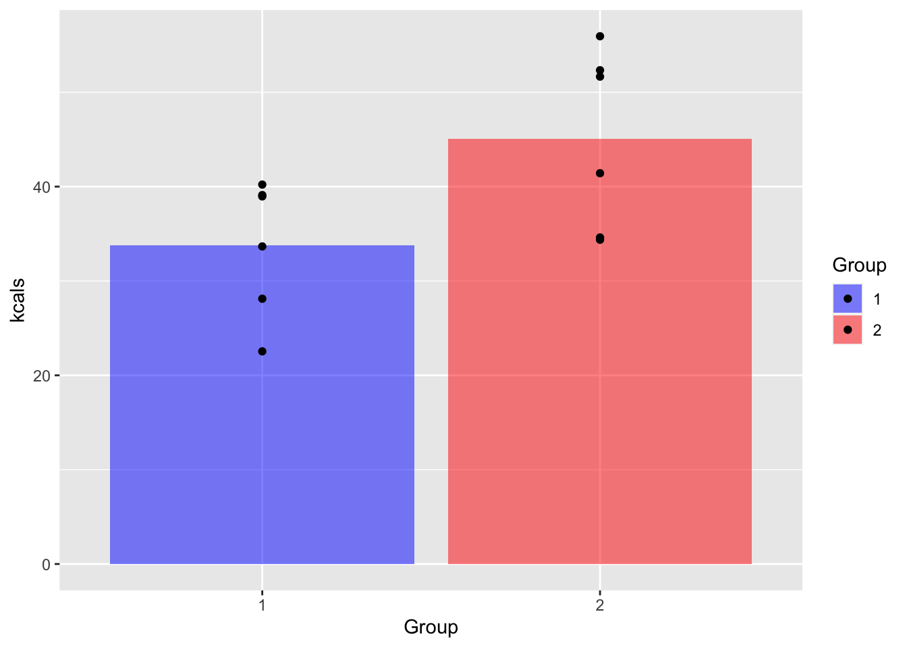
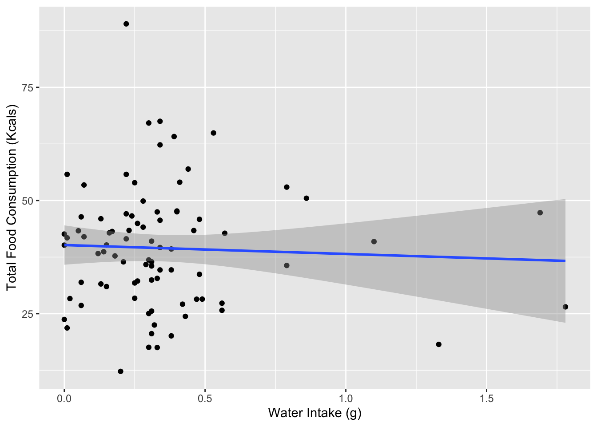

The goal of this project is to figure out if there is anything apart from the composition of our test diets that might be influencing the amount the rats consume during testing sessions for my thesis. Namely, there are two things I’m thinking of that may be factoring in:
1.) Food temperature. Because we only have a limited number of test chambers, we have to run the rats in two separate waves. We store the food in a refrigerator overnight, but it often makes more sense logistically to leave it out while the first group is running in order to make the switch off between groups of rats easier/faster. This also, however, allows the food to warm up to room temperature during the time the that the first group of rats is running, which might cause the food to taste differently for the second group.
2.) Water consumption. Rats may eat more (or less) food during sessions in which they drink more water, perhaps because hydration status influences flavor preferences or motivation to eat
Lucky for us, we can test both of these ideas with the data we’ve already collected. Let’s start by loading what we need:
# Packages
library(tidyverse)
library(readxl)
library(parsnip)
# Data
day_one <- read_excel("/Users/lawilson1999/Desktop/Data Science Spring 2023/Portfolio/p03/IC Diet Choice.xlsx",
sheet = 1,
col_names = TRUE)
day_two <- read_excel("/Users/lawilson1999/Desktop/Data Science Spring 2023/Portfolio/p03/IC Diet Choice.xlsx",
sheet = 2,
col_names = TRUE)
day_three <- read_excel("/Users/lawilson1999/Desktop/Data Science Spring 2023/Portfolio/p03/IC Diet Choice.xlsx",
sheet = 3,
col_names = TRUE)
day_four <- read_excel("/Users/lawilson1999/Desktop/Data Science Spring 2023/Portfolio/p03/IC Diet Choice.xlsx",
sheet = 4,
col_names = TRUE)
day_five <- read_excel("/Users/lawilson1999/Desktop/Data Science Spring 2023/Portfolio/p03/IC Diet Choice.xlsx",
sheet = 5,
col_names = TRUE)
day_six <- read_excel("/Users/lawilson1999/Desktop/Data Science Spring 2023/Portfolio/p03/IC Diet Choice.xlsx",
sheet = 6,
col_names = TRUE)
day_seven <- read_excel("/Users/lawilson1999/Desktop/Data Science Spring 2023/Portfolio/p03/IC Diet Choice.xlsx",
sheet = 7,
col_names = TRUE)Now that we have our data, we need to process it. We’ve done some of that before, in portfolio 3. Let’s add that code below:
#rename columns to something workable
columns <- c('rat', 'zero', 'twenty', 'forty', 'sixty', 'eighty', 'hundred', 'water')
colnames(day_one) <- columns
colnames(day_two) <- columns
colnames(day_three) <- columns
colnames(day_four) <- columns
colnames(day_five) <- columns
colnames(day_six) <- columns
colnames(day_seven) <- columns
##average the datasets together
#convert dataframes to matrices
m1 <- data.matrix(day_one)
m2 <- data.matrix(day_two)
m3 <- data.matrix(day_three)
m4 <- data.matrix(day_four)
m5 <- data.matrix(day_five)
m6 <- data.matrix(day_six)
m7 <- data.matrix(day_seven)
#average those matrices together and turn the result back into a data frame
m_avg <- (m1 + m2 + m3 + m4 + m5 + m6 + m7)/7
avg <- as.data.frame(m_avg)
## mutliply each column by the appropriate value
avg_kcal <- avg
avg_kcal$zero <- avg_kcal$zero*9
avg_kcal$twenty <- avg_kcal$twenty*8
avg_kcal$forty <- avg_kcal$forty*7
avg_kcal$sixty <- avg_kcal$sixty*6
avg_kcal$eighty <- avg_kcal$eighty*5
avg_kcal$hundred <- avg_kcal$hundred*4
#something weird happens with the rat column during the matrix conversion
#to fix this, I'm just going to manually assign values for that column
rat_names <- c("IC1", "IC2", "IC3", "IC4", "IC5", "IC6", "IC7", "IC8", "IC9", "IC10", "IC11", "IC12")
avg_kcal <- avg_kcal %>%
mutate(real_rat_name = rat_names) %>%
select(zero:real_rat_name)This leaves us with a data frame containing the average values each rat ate of each diet across the seven days of testing.
In order to test my idea about temperature, I need to divide the rats up into two groups, with rats IC1-IC6 in the first group(because they ran first) and rats IC7-IC12 in the second (because they ran second):
#Creates an index column I can use in the next step
index <- c(1:12)
avg_kcal <- avg_kcal %>%
mutate(index = index)
#Divides rats into two groups based on index
avg_kcal <- avg_kcal %>%
mutate(group = case_when(index <= 6 ~ 1,
index >= 7 ~ 2))Now let’s add across the rows to calculate average total kilocalories per session:
avg_kcal <- avg_kcal %>%
mutate(total = zero + twenty + forty + sixty + eighty + hundred)And the last thing we need to do is reformat:
avg_kcal_long <- avg_kcal %>%
pivot_longer(cols = -c(real_rat_name, index, group),
names_to = "diet",
values_to = "kcals") %>%
select(real_rat_name, group, diet, kcals)And now we have what we need! Before anything else, let’s visualize the difference in average total calories consumed between the two groups:
#calculate group means
group_means <- avg_kcal_long %>%
filter(diet == "total") %>%
group_by(group) %>%
summarize(mean(kcals))
colnames(group_means)[2] <- "kcals"
group_means %>%
ggplot(aes(x = group, y = kcals, fill = as.factor(group))) +
geom_bar(stat = "identity", alpha = 0.5) +
geom_point(data = filter(avg_kcal_long, diet == "total"), stat = "identity") +
scale_fill_manual(values = c("blue", "red"))
So just based on the visual, it looks like we do have a descriptive difference between the groups, with the rats in group two eating more than those in group 1. Let’s test this difference for significance:
avg_totals <- avg_kcal %>%
select(real_rat_name, group, total)
t.test(total ~ group, avg_totals, alternative = "two.sided")##
## Welch Two Sample t-test
##
## data: total by group
## t = -2.3469, df = 9.1804, p-value = 0.043
## alternative hypothesis: true difference in means between group 1 and group 2 is not equal to 0
## 95 percent confidence interval:
## -22.327657 -0.443772
## sample estimates:
## mean in group 1 mean in group 2
## 33.59167 44.97738And our difference is significant. It looks like the rats prefer their food a little bit warmer (or something else about the second session) after all. It may also be that rats in the second group are heavier and therefore eat more as well, but without data on their weights I can easily put my hands on right now (downside of keeping paper records), I’m not able to test that idea here.
Next I want to see if water intake was related to average consumption at all. That should be easy enough to do here!
I want to take advantage of the fact that we have multiple days worth of data and plot each day as a data point rather than just use averages. That means we’ll have. to do a bit more data wrangling, but it should be straightforward enough.
First, let’s add a variable to the data frame for each day that just gives the day number:
day_one <- day_one %>%
mutate(day = 1)
day_two <- day_two %>%
mutate(day = 2)
day_three <- day_three %>%
mutate(day = 3)
day_four <- day_four %>%
mutate(day = 4)
day_five <- day_five %>%
mutate(day = 5)
day_six <- day_six %>%
mutate(day = 6)
day_seven <- day_seven %>%
mutate(day = 7)Now let’s concatenate the data frames:
days <- list(day_one, day_two, day_three, day_four, day_five, day_six, day_seven)
all_days <- do.call("rbind", days)
all_days_kcal <- all_days
all_days_kcal$zero <- all_days_kcal$zero*9
all_days_kcal$twenty <- all_days_kcal$twenty*8
all_days_kcal$forty <- all_days_kcal$forty*7
all_days_kcal$sixty <- all_days_kcal$sixty*6
all_days_kcal$eighty <- all_days_kcal$eighty*5
all_days_kcal$hundred <- all_days_kcal$hundred*4Again lets add across the rows, group our rats, and select the columns we need
all_days_kcal_post <- all_days_kcal %>%
mutate(total = zero + twenty + forty + sixty + eighty + hundred) %>%
mutate(group = case_when(rat == "IC1"~1,
rat == "IC2"~1,
rat == "IC3"~1,
rat == "IC4"~1,
rat =="IC5"~1,
rat == "IC6"~1,
rat == "IC7"~2,
rat == "IC8"~2,
rat == "IC9"~2,
rat == "IC10"~2,
rat == "IC11"~2,
rat == "IC12"~2)) %>%
select(rat, group, day, water, total)And with things properly formatted, we can see how water and total calorie intake are related:
cor(all_days_kcal_post$total, all_days_kcal_post$water, use = "complete.obs")## [1] -0.04586677m_calorie_water <- linear_reg() %>%
set_engine("lm") %>%
fit(total ~ water, data = all_days_kcal_post)
tidy(m_calorie_water)## # A tibble: 2 × 5
## term estimate std.error statistic p.value
## <chr> <dbl> <dbl> <dbl> <dbl>
## 1 (Intercept) 40.0 2.19 18.3 1.82e-30
## 2 water -1.94 4.69 -0.413 6.81e- 1all_days_kcal_post %>%
ggplot(aes(x = water, y = total)) +
geom_jitter() +
geom_smooth(method = "lm")## `geom_smooth()` using formula = 'y ~ x'## Warning: Removed 1 rows containing non-finite values (`stat_smooth()`).## Warning: Removed 1 rows containing missing values (`geom_point()`).
This gives us pretty convincing evidence that water and calorie intake aren’t meaningfully related. The correlation between the two is fairly low, and when we use water intake to predict calorie intake the slope is non-significant.
The first group of rats to go into the test chambers each day ate significantly less during my first thesis experiment than the second group
Water intake is not meaningfully related to calorie intake